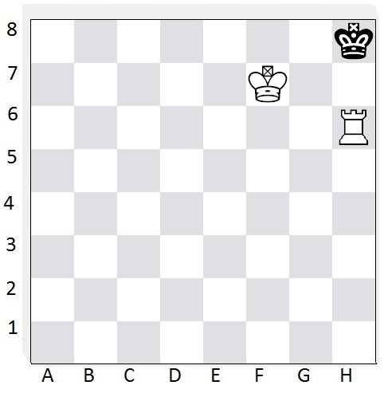

How to checkmate with a rook and a king
- Control the Seventh Rank: Position your rook on the seventh rank if you are playing as White, or the second rank if you are playing as Black. This will restrict the opponent's king's movement and create checkmate threats.
- Cut off the Opponent's King: Use your rook to cut off the opponent's king from escaping to the sides or back ranks. Move your rook to the appropriate squares to restrict the opponent's king's movement.
- Create a Box: With your rook and king, create a "box" around the opponent's king. Keep a safe distance with your own king while ensuring that the opponent's king has limited space to maneuver.
- Coordination and King Support: Coordinate your rook and king effectively to apply pressure and restrict the opponent's king. Keep your king close to the action to provide support and protect your rook from potential checks.
- Create a Zugzwang Position: Create a zugzwang situation where the opponent's king is forced to move and worsen its position. By limiting the opponent's king's moves, you can create opportunities for a checkmate.
- Utilize Back-Rank Checkmate: The most common checkmating pattern with a rook is the back-rank checkmate. Push the opponent's king to the back rank and deliver checkmate by placing your rook on the same rank, cutting off the king's escape, and delivering the final checkmate.
- Utilize Rank and File Checkmate: Another checkmating pattern is the rank or file checkmate. Use your rook to deliver checkmate by placing it on the same file or rank as the opponent's king while simultaneously restricting the king's movement.
- Avoid Stalemate: Be cautious of stalemate situations. Ensure that the opponent's king always has a legal move available. Stalemate occurs when the opponent's king has no legal moves but is not in check, resulting in a draw instead of a checkmate.
